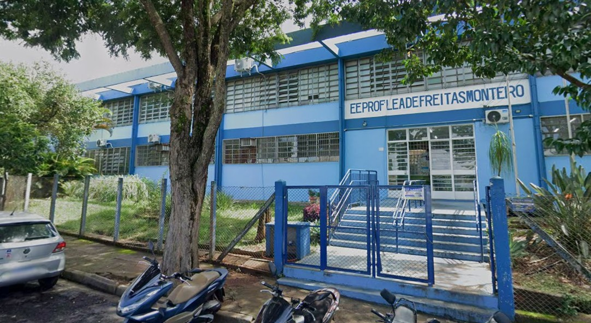

Bem-vindo ao nosso Sistema de Turmas
O Anuário Escolar é um espaço dedicado a reunir as memórias, turmas e momentos mais importantes do ano letivo. Aqui você encontra fotos, informações dos alunos e registros dos eventos que marcaram nossa escola.

Escola Lea de Freitas Monteiro, Araraquara,
Esse site foi feito pelos aluno para a escola Lea de Freitas Monteiro, com o intuito de registrar os alunos e professores, que passaram pela escola, e serem lembrados para sempre.